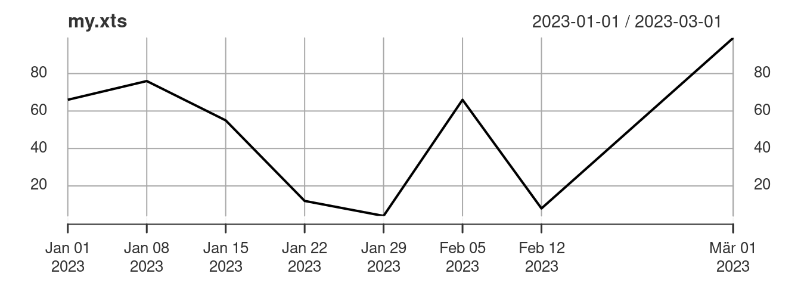
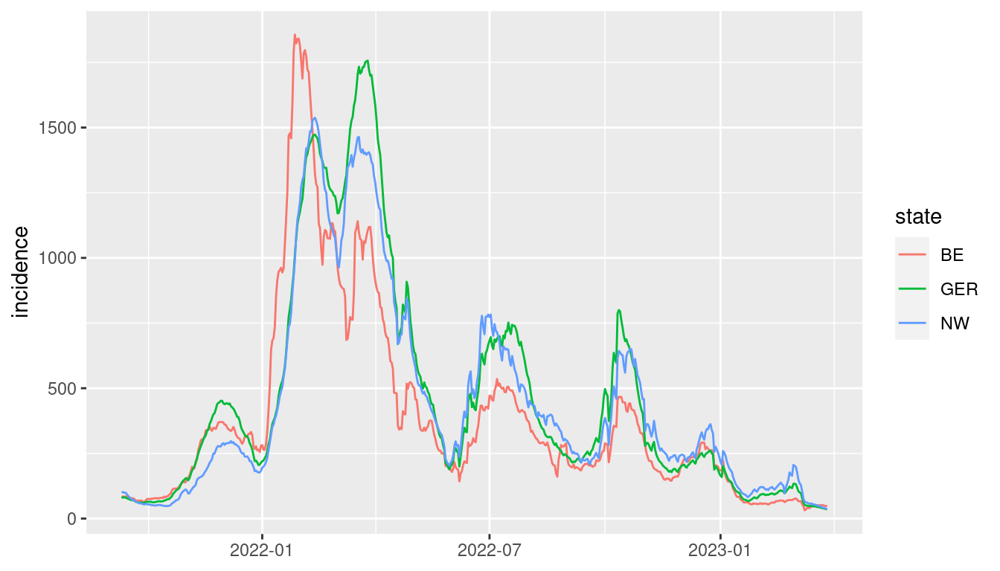

install.packages("xts")2 Packages
One of the best features of R are the large number of contributed packages from the statistical community. The list of all packages on CRAN is impressive! Take a look at it here. You find R packages for almost any statistical method out there. Many statisticians provide R packages to accompany their research. Some packages also provide additional functionality for R or include datasets.
2.1 The xts package
Let us look at a time series specific package: the xts package. It can be installed using the install.packages() function.
The xts package provides the class xts, which has certain advantages over ts. A ts object can specify the frequency of a time series only as a portion of a year (1 for yearly, 4 for quarterly, 12 for monthly data). This scheme is convenient for regular macroeconomic time series but impractical for daily data (leap year problem), high-frequency data, or irregularly collected data. In an xts object, we are much more flexible and manually assign a specific time index to each observation in the time series.
Once installed, the package only has to be loaded at the beginning of a new R session, which is done with the command library(xts).
library(xts)
myts = ts(c(66, 76, 55, 12, 4, 66, 8, 99), start = 2020, frequency = 4)
as.xts(myts) # convert a ts object into an xts object [,1]
2020 Q1 66
2020 Q2 76
2020 Q3 55
2020 Q4 12
2021 Q1 4
2021 Q2 66
2021 Q3 8
2021 Q4 99# we may assign irregular time points:
dates = seq.Date(as.Date("2023-01-01"), by = 7, length.out = 7)
dates[8] = as.Date("2023-03-01")
my.xts = xts(myts, dates)
plot(my.xts)
2.2 Data packages
For teaching, I have created the package teachingdata, which contains some current datasets. The package is not available on CRAN (your package must meet specific quality standards and go through a review process to be accepted there), but I have created a GitHub repository to make it accessible. We need the package remotes and its function install_github() to install a package from a GitHub repository.
install.packages("remotes")
remotes::install_github("ottosven/teachingdata")Let’s have a closer look at the data from the teachingdata package.
2.3 The tidyverse
The tidyverse is a collection of packages that lets you import, manipulate, explore, visualize, and model data in a harmonized and consistent way.
Installing the tidyverse package:
install.packages("tidyverse")In this lecture, we will mainly use R to theoretically understand the learned statistical and econometric methods and apply them illustratively. For this purpose, base R is entirely sufficient. However, tidyverse has become state of the art for applied work with large data sets and is especially recommended for data management and visualization.
To give you a flavor of the tidyverse, let us briefly discuss the ggplot2 and tibble packages, which are part of the tidyverse.
Nice plots can be produced using the R-package ggplot2. Let’s plot the iris dataset, which is contained in base R.
class(iris) # iris is a data.frame[1] "data.frame"iris |>
ggplot(aes(x = Sepal.Length, y = Petal.Length, color = Species)) +
geom_point()A data.frame in the tidyverse is called tibble. A tibble is sometimes more flexible and convenient for manipulating and printing data. Let’s transform the iris data frame into a tibble.
iris.tbl = as_tibble(iris)
iris.tbl # iris.tbl is a tibble# A tibble: 150 × 5
Sepal.Length Sepal.Width Petal.Length Petal.Width Species
<dbl> <dbl> <dbl> <dbl> <fct>
1 5.1 3.5 1.4 0.2 setosa
2 4.9 3 1.4 0.2 setosa
3 4.7 3.2 1.3 0.2 setosa
4 4.6 3.1 1.5 0.2 setosa
5 5 3.6 1.4 0.2 setosa
6 5.4 3.9 1.7 0.4 setosa
7 4.6 3.4 1.4 0.3 setosa
8 5 3.4 1.5 0.2 setosa
9 4.4 2.9 1.4 0.2 setosa
10 4.9 3.1 1.5 0.1 setosa
# ℹ 140 more rowsAs an extension, a tsibble object is a tibble with an additional time series structure. It contains a specific index variable corresponding to the observation’s time index. Let us convert the covidcases data into a tsibble. To visualize a tsibble we also need the fable package.
In a tsibble object, we can define so-called key variables, which define the subjects or individuals measured over time. Key variables also allow easy processing of panel data in R.
In the covidcases example, the key variables are the federal states, and the time series is the incidence numbers. Since a simultaneous display of the curves of all federal states would produce a very cluttered plot, we select only the total Germany, Nordrhein-Westfalen, and Berlin. The different steps can be represented in tidyverse as a sequence of multiple operations using the pipe operator |> (other pipes like %>%do a similar job).
covid.tsibble = as_tsibble(covidcases, index=date) |>
pivot_longer(-date, names_to = "state", values_to = "incidence") |>
filter(state %in% c("GER", "NW", "BE"))
covid.tsibble# A tsibble: 1,563 x 3 [1D]
# Key: state [3]
date state incidence
<date> <chr> <dbl>
1 2021-09-11 BE 83.5
2 2021-09-11 NW 103.
3 2021-09-11 GER 82.7
4 2021-09-12 BE 84.3
5 2021-09-12 NW 101.
6 2021-09-12 GER 80.1
7 2021-09-13 BE 83.7
8 2021-09-13 NW 99.3
9 2021-09-13 GER 81.8
10 2021-09-14 BE 84.9
# ℹ 1,553 more rowscovid.tsibble |>
autoplot(incidence) + theme(axis.title.x=element_blank())
For an introduction to the tidyverse and to learn more about the packages and functions used above, have a look at the book R for Data Science. To learn more about visualizing and analyzing time series data using the tsibble and fable packages, I recommend the textbook Forecasting: principles and practice.